Cross-Validation Results: Automatic Report and Interpretation
Metrics by Fold
| Fold |
R2 |
MSE |
RMSE |
MAE |
| 1 |
-0.098209 |
965.045776 |
31.065186 |
27.527235 |
| 2 |
-0.136526 |
561.643343 |
23.699016 |
19.699787 |
| 3 |
-2.989105 |
967.299156 |
31.101433 |
28.144406 |
| 4 |
-1.494737 |
570.864164 |
23.892764 |
17.648310 |
| 5 |
-0.196133 |
1022.983906 |
31.984120 |
26.337461 |
Feature Importance (mean ± std)
| feature |
mean_importance |
std_importance |
| semantic |
0.207086 |
0.094035 |
| reyword |
0.162679 |
0.101882 |
| criq |
0.151815 |
0.066328 |
| reyfig |
0.112402 |
0.033714 |
| denomdescr |
0.099584 |
0.044840 |
| phonemic |
0.067560 |
0.014670 |
| span_for |
0.062555 |
0.017379 |
| trog |
0.057715 |
0.023171 |
| mmse |
0.040971 |
0.006746 |
| span_back |
0.037634 |
0.014212 |
Main Plots
feature_importances_mean_std.png
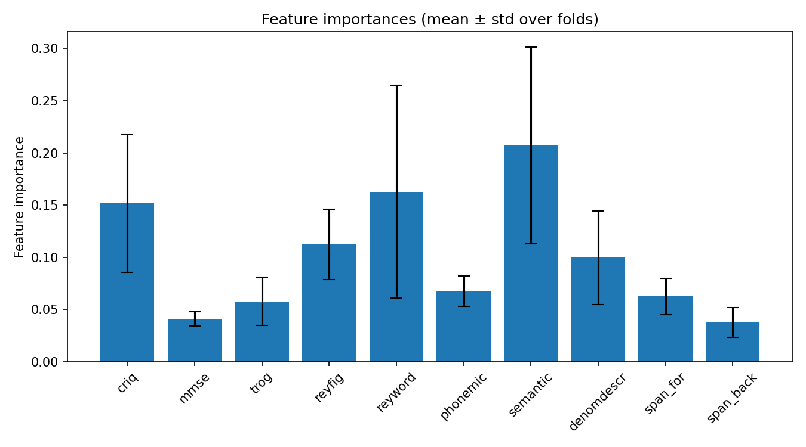
feature_importances_correlation_heatmap.png
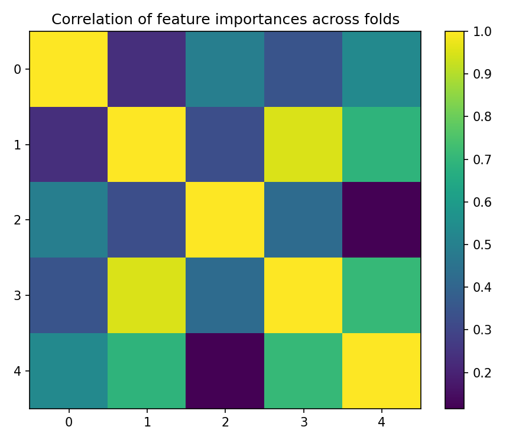
best_fold_1_feature_importances.png
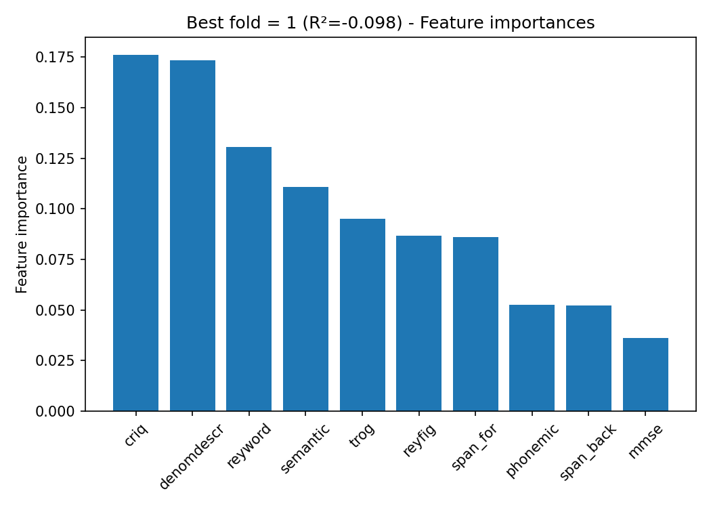
True vs Predicted Scatter Plots (by fold)
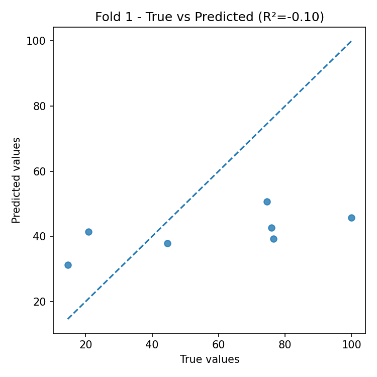
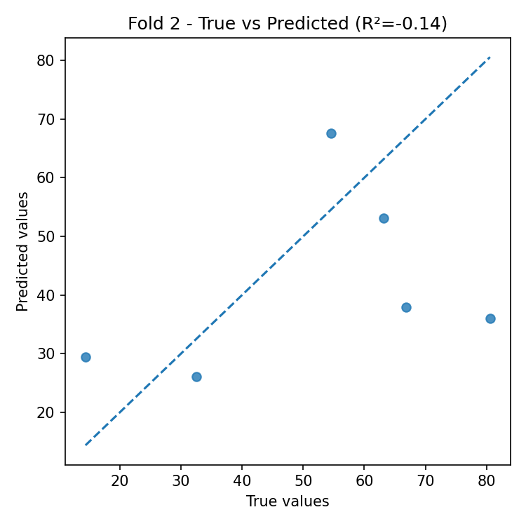
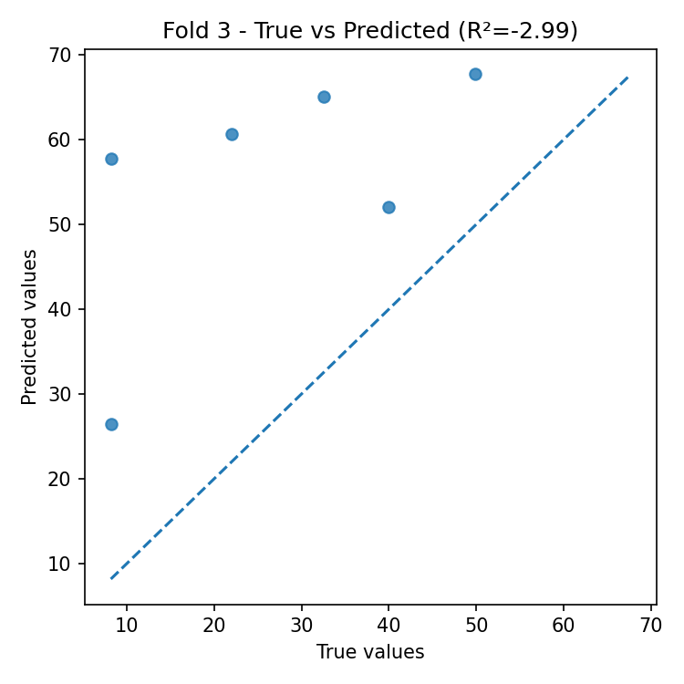
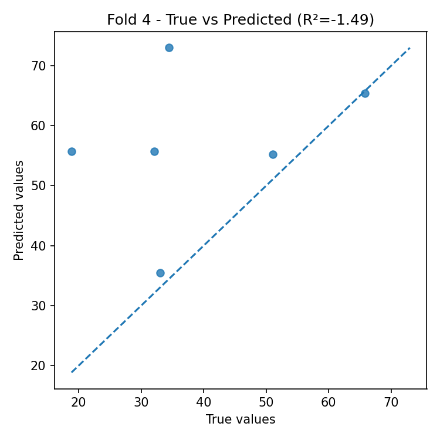
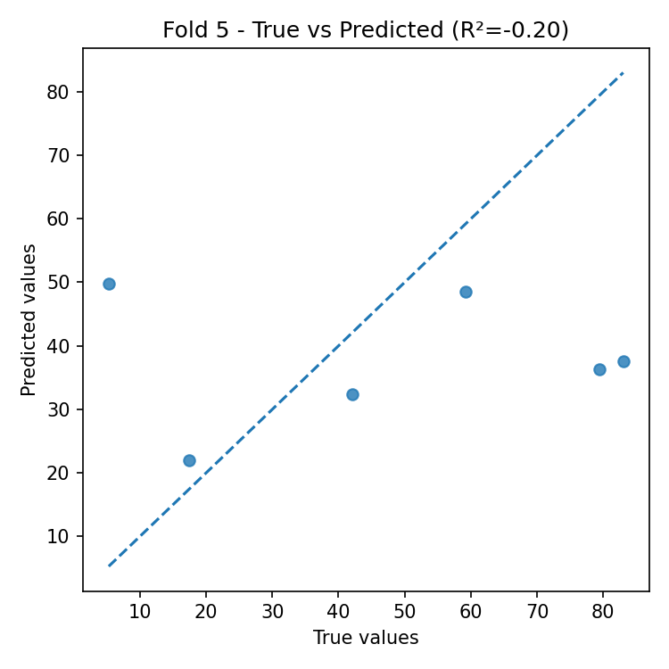
Residual Plots (by fold)
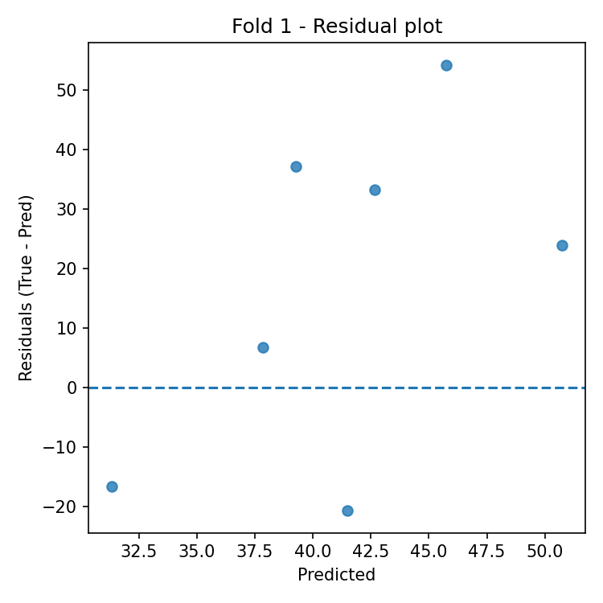
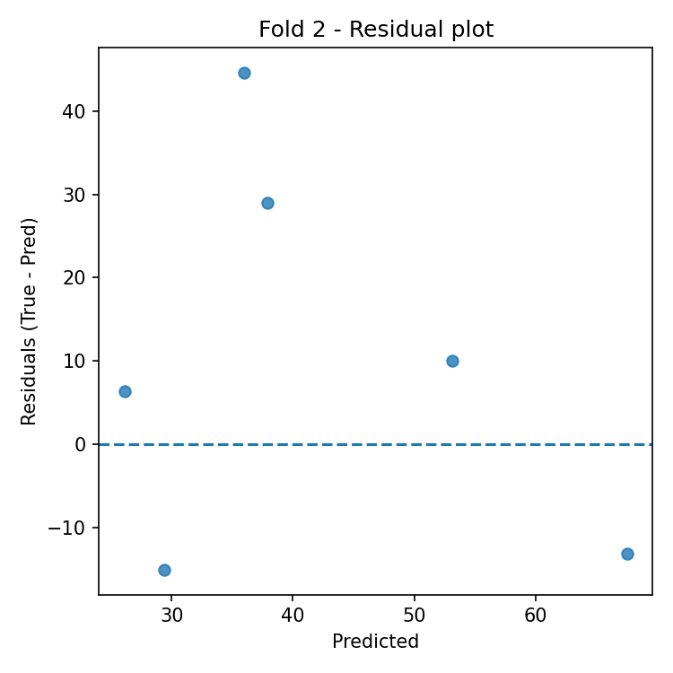
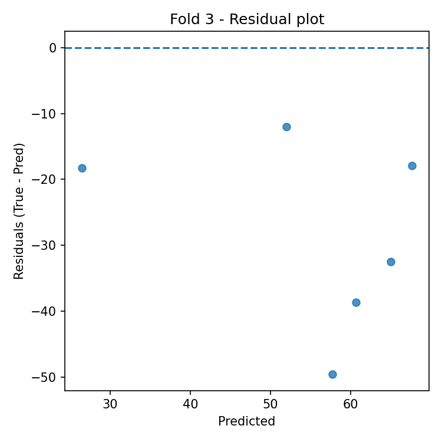
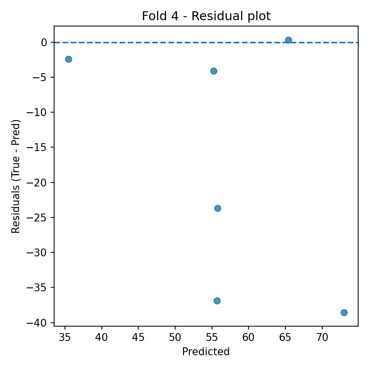
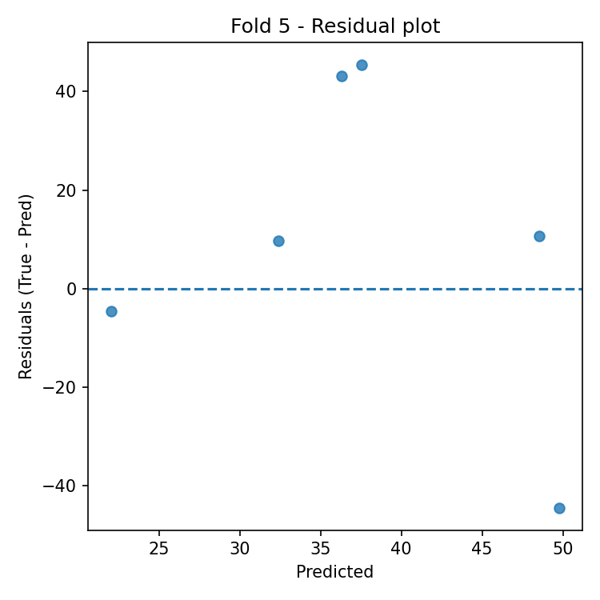
Automatic Interpretation
Overall Performance
- Mean R² across folds: -0.983 (± 1.265).
- Average error: RMSE = 28.349, MAE = 23.871 (same unit as target variable).
Model Stability
- R² variability across folds is high (std = 1.265).
- Average feature importance stability across folds: 0.042 (lower = more stable).
Most Important Features (average across all folds)
- Top-3: semantic (0.207), reyword (0.163), criq (0.152).
Best Fold
- Best fold: 1 with R² = -0.098.
- In the best fold, the most important features are: criq (0.176), denomdescr (0.174), reyword (0.131).
Residual Analysis (best fold)
- Residuals–predictions correlation: 0.554 (0 ≈ absence of linear bias).
- |Residuals|–predictions correlation: 0.438 (positive values indicate possible heteroscedasticity).
- Outliers (|res| > 3·std): 0.